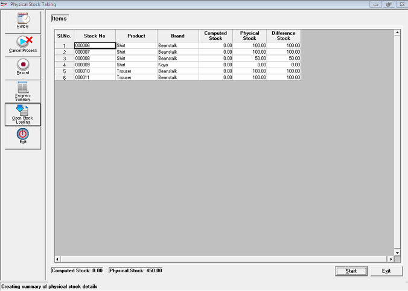

Activation of the Open Stock Loading is based on the Supervisor user permissions.
Open Stock Loading option gets activated only when
The physical stock taking scope is FULL
Physical Stock Taking is done for the first time
There are no Transactions done

Items: Displays Computed and Physical Stock for each Classification 1 (Product)/ Classification 2 (Brand) combination. It also displays the total Computed Stock and total Physical Stock for the defined Scope at the bottom of the display grid.